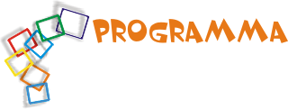
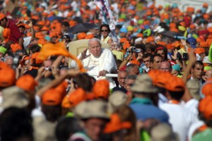
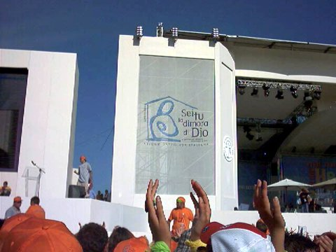

Ore 7,15: insediamento della Segreteria di Azione Cattolica su 4 postazioni diverse.
Ore 8,00:
è previsto l’arrivo delle associazioni parrocchiali dalle città
di Trani, Barletta, Bisceglie, Corato, Margherita di Savoia, Trinitapoli e
S. Ferdinando e susseguente allestimento degli stands (se ne prevedono 25)
con l’esposizione dei lavori di un anno di formazione (cartellonistica,
video o quant’altro)
È prevista l’affluenza di circa 2000 persone tra ragazzi, giovani
e adulti.
In P.zza V.Emanuele –lato Palazzuolo- sarà allestito il palco
di mt. (12 x 7) .

Ore
9,00: “…ti vengo incontro fierA di esserCI”
avrà inizio l’accoglienza curata dai ragazzi dell’ACR in
veste di “Muratori”
Che porteranno i segni della “CASA AC”:
tegole, pareti, e segni tipici che identificano le 7 città.
Musica, canti e danze animeranno il momento.
Poco prima delle 10,00 un breve momento di preghiera segnerà la prima
tappa della giornata.
NOTA: per tutta la mattinata sarà allestito l’angolo
della parola e della riconciliazione
Presso le suore clarisse!
Ore 10,00: “…CONVEGNO
IMPEGNO SOSTEGNO”
Siamo tutti convenuti a Fiera di Esserci, nelle nostre diversità, per
impegnarci a migliorare le nostre associazioni e sostenere l'azione cattolica
nazionale e diocesana. E' un incontro che diventa operativo se seguiamo questi
tre termini, simili nel suono, grandi di significato.
- ACR:...la
tappa “fierA di esserCI” coincide nel cammino dei ragazzi con
il MESE degli INCONTRI.
Quale miglior esperienza educativa per i gruppi parrocchiali per far sperimentare
la gioia dell’incontro con il fratello ed il territorio. I ragazzi imparano
a sentirsi protagonisti e parte viva
Della missione della Chiesa: annunciare a tutto il mondo la gioia del risorto.
A tal riguardo si sottolinea l’importante ruolo degli educatori di gruppo
che favoriscono questa esperienza di vita agli acierrini rendendoli partecipi
di un avvenimento diocesano ed associativo che si realizza ormai ogni tre
anni! E’ missione popolare anche per i ragazzi!
- Giovani:
“in dialogo tra parole e immagini”
Con l’aiuto di cortometraggi realizzati dai gruppi, un ospite metterà
in risalto l’importanza del comunicare e come poter essere testimoni
autentici tra la gente abbattendo le barriere.
- Adulti:
“l’ANNUNCIO dopo Verona”
Il momento sarà animato da frate Leonardo: si prevedono canzoni a tema
commentate e un musical di alcuni minuti. È prevista anche un’animazione
curata dagli adulti.
Ore 12,00:
“FIERALAND”
La terra della Fiera, neologismo per esprimere il momento degli stand e dell'entusiasmo
di quanti lavoreranno agli stand.
Ci si ritrova tutti insieme per dare il via alla fiera. Un percorso libero
tra gli stands allestiti animato da canti e spot informativi.
- saluto del presidente diocesano e del sindaco di Bisceglie.
Ore 13,00:
“RISTORO AZIONE”
Gioco di parole che graficamente può essere rappresentato in maniera
creativa.
E’ Il pranzo al sacco dei soci di azione cattolica un momento di fraternità
e condivisione.

Ore 14,30:
“ACI BABA' E I 140 FESTONI”
Dall'omonima favola, per festeggiare i 140 anni di AZIONE CATTOLICA ci avvaliamo
dell'acronimo A.C.I. e dei festoni, utili e onnipresenti nelle feste.
La festa per i 140 anni dell’Azione Cattolica sarà ricca di canti,
danze e animazioni che devono coinvolgerci tutti dai ragazzi agli adulti,
saranno previste brevi interviste…e la torta, ma soprattutto sarà
costruita la “CASA COMUNE dell’AC”.
Ore 17,00:
“TRASFORMATI dal Risorto”
Celebrazione eucaristica (all’aperto sul palco) presieduta dal Vescovo
con consegna di un pezzo della “CASA” ai presidenti parrocchiali.
Ore 18,15: conclusione della manifestazione e rientro.